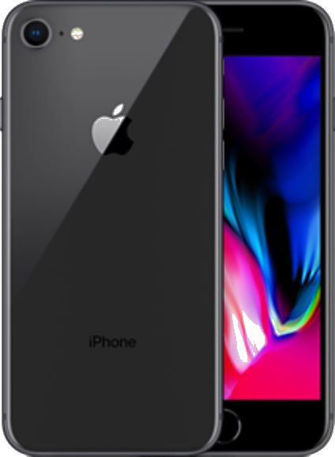
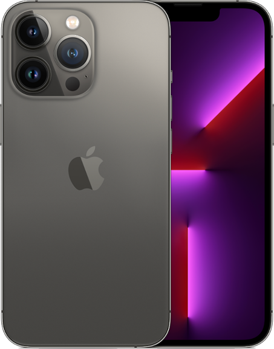
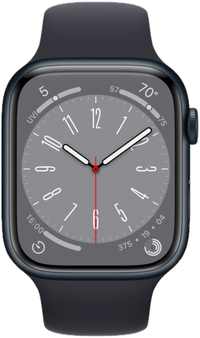
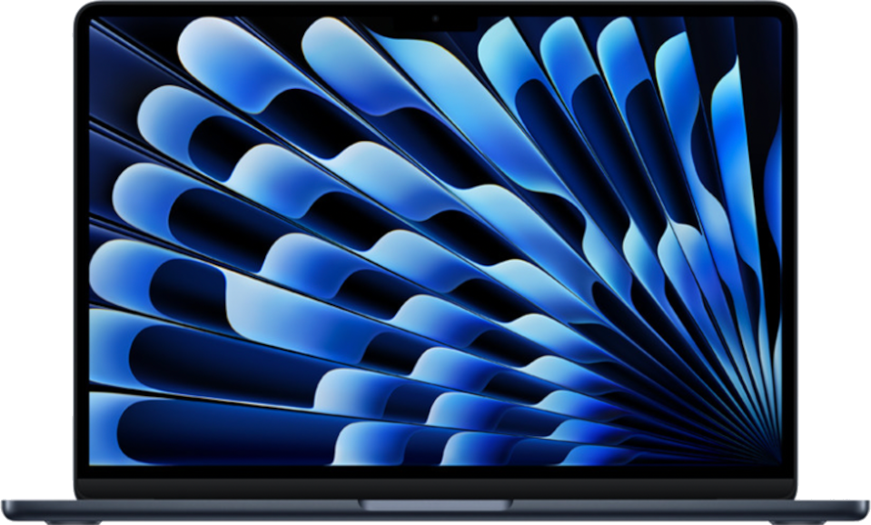

iPhone 8
iPhone 8 to klasyczny, kompaktowy iPhone z mocnym jak na swój czas układem A11, bezprzewodowym ładowaniem i dobrą 12 Mp kamerą, co wciąż wystarcza do podstawowych zadań. Chwalony jest za poręczny rozmiar, solidną jakość wykonania i rozsądną wydajność w codziennym użyciu. Jednocześnie design z grubymi ramkami i 4.7" LCD wygląda dziś na przestarzały, a pojedynczy aparat i brak nowoczesnych funkcji ograniczają możliwości foto-wideo. Bateria i modem też odstają od nowszych modeli. Jeśli priorytetem są małe rozmiary i niska cena, to nadal ma sens; do gier, foto i 5G – lepiej nowszy model.
iPhone 13 Pro
iPhone 13 Pro przyniósł duże skoki: ekran 120Hz ProMotion, długi czas pracy i bardzo mocny układ z topową wydajnością oraz świetne zdjęcia i wideo (w tym makro, ProRes, Dolby Vision). Recenzenci doceniają płynność wyświetlacza, głośne stereo i solidną, wodoszczelną obudowę. Wady to ciężka, „stara” stylistyka z notchem, ograniczona dostępność 120Hz w aplikacjach na starcie i ładowanie, które nie jest najszybsze; ładowarki brak w pudełku. Pod maksymalnym obciążeniem chip potrafi wyraźnie dławic się termicznie, a żywotność baterii jest świetna, choć krótsza niż w wersji Pro Max.
iPad Pro 2018
iPad Pro 2018 z A12X to potęga wydajności – w wielu zadaniach dorównuje laptopom z Core i7, oferując przy tym smukły, lekki design, świetny ekran Liquid Retina, długi czas pracy i USB‑C. Nowy Apple Pencil i Face ID poprawiają wygodę, a całość imponuje kulturą pracy i multimediami. Ograniczenia? Bazowe 64GB szybko się zapełnia, klawiatura i brak gładzika (wówczas) czyniły go mniej wygodnym niż Surface pod kątem pracy biurowej, a iPadOS bywał barierą „zamiast laptopa”. Mimo to, jako tablet do kreacji, edycji foto/wideo i notatek – znakomity.
Apple Watch 8
Apple Watch 8 rozwija sprawdzony projekt: bardzo dobry ekran, szybkie działanie, haptyka i 50m wodoszczelności, a do tego czujnik temperatury (cykl/sen), tryb niskiego zużycia i wykrywanie wypadków. Recenzenci chwalą dopracowany watchOS 9 i komfort noszenia, wskazując jednak, że zmiany względem serii 7 są umiarkowane. Minusy to przeciętna żywotność baterii bez low power, niedoskonałości śledzenia snu/drzemek i rozproszenie funkcji po kilku aplikacjach oraz zarządzanie powiadomieniami, które prosi się o dopieszczenie. Całość pozostaje jednym z najlepszych smartwatchy, zwłaszcza dla użytkowników iPhone’a.
MacBook Air M4
MacBook Air M4 oferuje bardzo długą baterię, świetny ekran z pełnym DCI‑P3, znakomitą klawiaturę i duży gładzik w ultralekkiej, solidnej obudowie, z szybkim magazynem i świetną kamerą 1080p. Wydajność M4 w pracy biurowej i lekkiej kreatywnej jest znakomita, a wzrosty względem M3 są wyraźne, szczególnie w jednowątkowych i GPU‑zależnych zadaniach; do tego mocny Neural Engine pod funkcje AI. Wady: porty tylko 2× USB‑C/Thunderbolt, pamięć i SSD są wlutowane, a przy długim, ciężkim obciążeniu pojawia się throttling; to nie sprzęt do bardzo wymagających projektów. Jako mobilny „daily driver” – rewelacyjny.